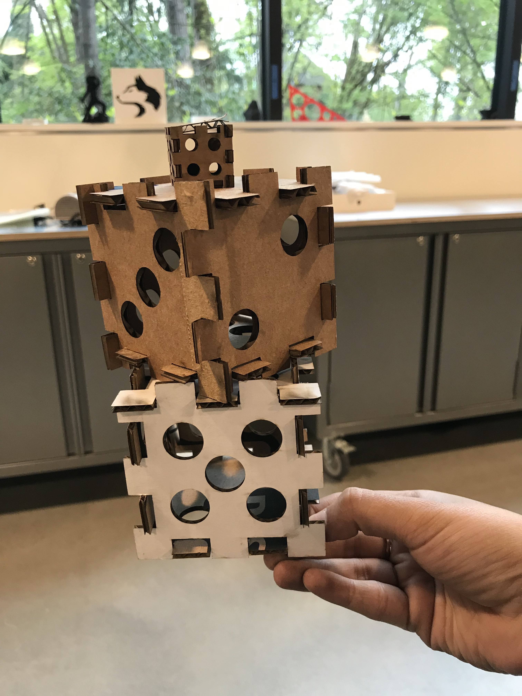

Phase 1: To build this dices with laser cut for press fit construction kit, I started with creating some basic square shapes in vector using Illustrator by taking some inspiration from pintrest and fab lab. Then I decided to have larger of cut out spaces instead of smaller so then I used caliper to measure the thickness of the cardboard that I used, which is about 0.215 inch thick. Based on this, I created suqares and cirlces with 0.6 gap on it.
Phase 2 Once at the Mill I measured the a spare cardboard with Calipers and printed out a test version, I quickly realized that I would need to rethink the size of the components as they were initially smaller than my finished product, however I was running into durability issues with the slots as they were so further from each other and made quite a difference. I also re-measured my cardboard and made my slots a few inches smaller, and this made all the difference.
Miniature Test version of Dice
Phase 3:
Next I started printing, and went through a few practice trials.... the first one I literally having no idea burnt it.. wish I took a picture but then Andrew helped me with the setting it up #saviour.
Settings I used in machine for printing. It was during these trials that I adjusted the size of the vectors and re-measured the size of my cardboard.
Then due to running out of the cardboard I had I used another cardboard almost the same length. During that time I adjusted my sheet size in the printer according to the print size. Chandana at the Mill helped me with the settings because I was having hard time getting propoer cuts in sheet.
Phase 4
Finally I built the dice! That's all my process, really enjoyed creating something by myself and seeing the machine running. I want to thank Andrew and Chandana for answering my all the quesitons regarding showing me how to use the laser cutting machine!
